El embajador de Ecuador en Perú , Horacio Sevilla , confirmó hoy que el presidente de su país , Gustavo Noboa , asistirá a la XII Cumbre de Jefes de Estados Andinos que se celebrará en Lima el 9 y 10 de junio.
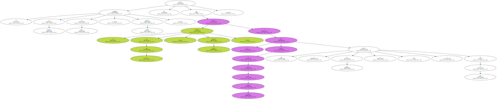" Es una reunión de gran trascendencia puesto que ahí se hará la reafirmación de la necesidad de la unidad de la Comunidad Andina , de la unidad de nuestra subregión frente a los grandes desafíos que se nos presentan por la globalización " , manifestó a la prensa peruana.
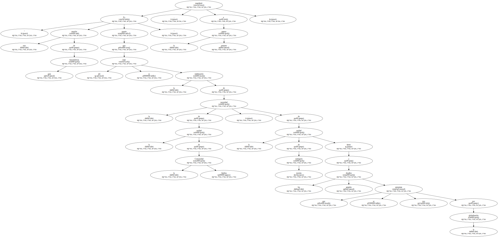Sevilla dijo que " el presidente del Ecuador , el doctor Gustavo Noboa Bejarano estará la próxima semana aquí en Lima para participar en la reunión de la Comunidad Andina ".
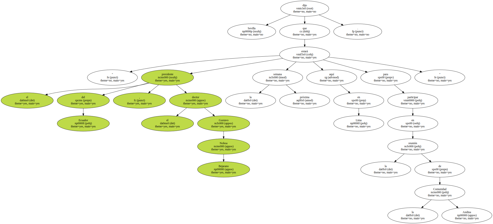A esa cita , indicó , acudirán además los presidentes Hugo Banzer , de Bolivia , Andrés Pastrana , de Colombia , Hugo Chávez , de Venezuela y Alberto Fujimori , de Perú , que es el anfitrión.
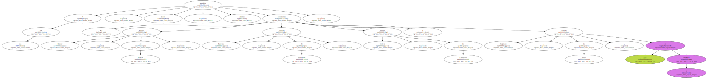Sevilla expresó que en Lima estarán los cinco mandatarios andinos conversando sobre el proceso de integración que impulsan sus países desde hace más de 30 años.
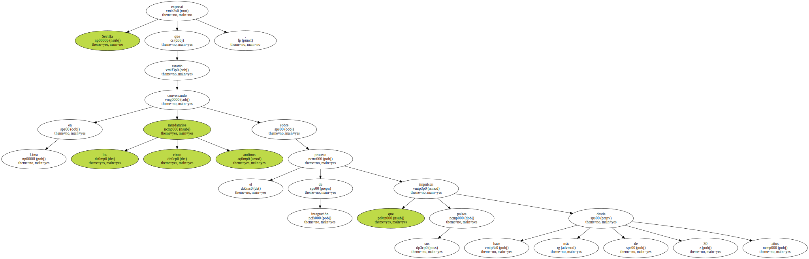El empresario fiyiano George Speight , cabecilla de una intentona golpista , salió hoy del Parlamento , donde tiene retenidas a unas treinta personas , para reunirse con los militares y negociar una salida a la crisis que atraviesa Fiyi desde hace 14 días.
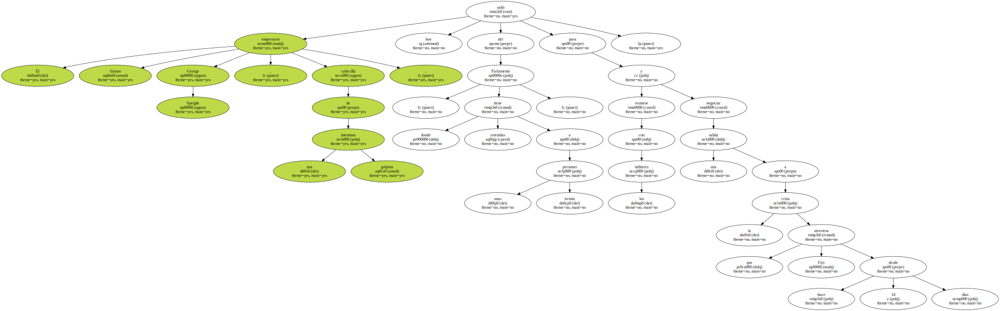Speight , quien ha definido su acción como un " golpe de Estado civil " en favor de la comunidad de nativos fiyianos , dejó el recinto del Legislativo escoltado por un grupo de soldados.
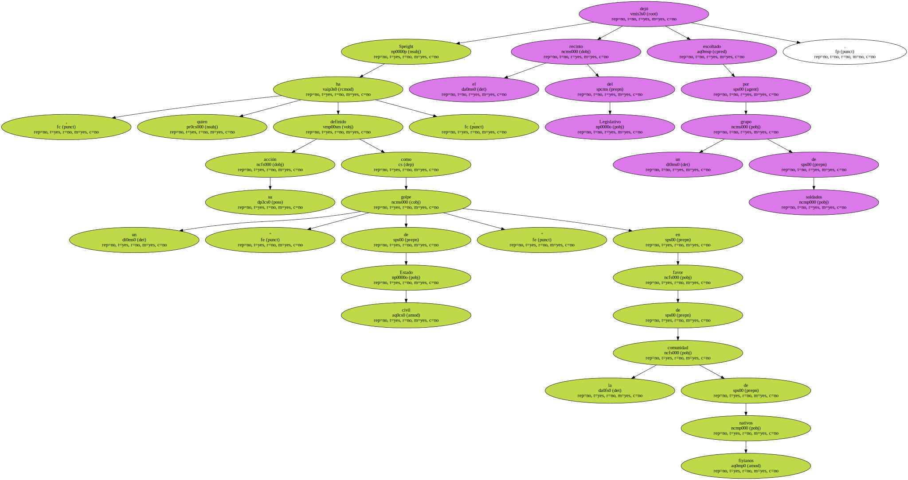Según Radio Fiyi , los golpistas han presentado hoy al régimen militar que encabeza el comandante Frank Binimarama una propuesta de nueve puntos en la que se exige el fin de la ley marcial , impuesta el lunes , y el retorno de un gobierno civil , en concreto uno decidido por Speihgt.

Los golpistas afirman que el autoproclamado Gobierno que formó Speight el 20 de mayo tiene " el mandato del pueblo " , según la fuente.
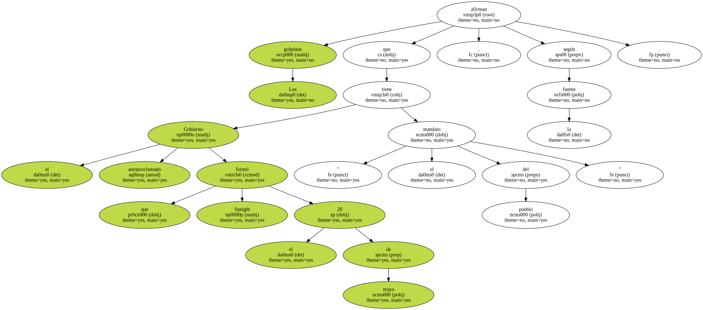Por parte de los militares , los negociadores de Binimarama pondrán sobre la mesa el tema de los rehenes y cuándo tendrá lugar su liberación.
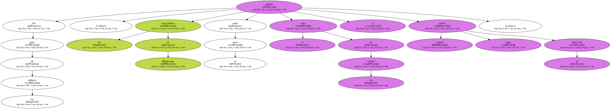Ayer , el régimen de Binimarama , que recibió las riendas del país del presidente Kamisese Mara el lunes pasado , propuso sin éxito a Speight establecer un gobierno militar provisional que elabore una nueva Constitución y convoque elecciones democráticas en un plazo de unos tres años.
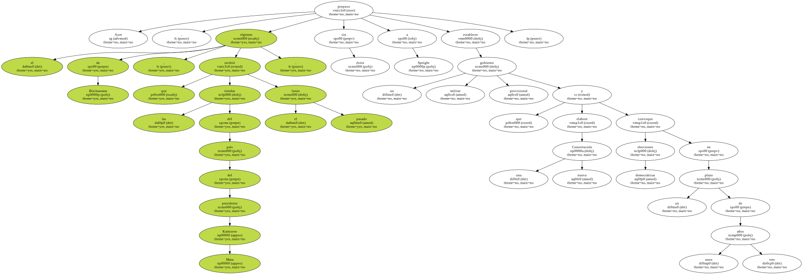Hasta la fecha , Speight ha logrado , menos gobernar , todas sus demandas : derogar la Constitución , derribar al gobierno democrático del primer ministro Mahendra Chaudhry , la retirada del presidente Kamisese Mara y la inmunidad.
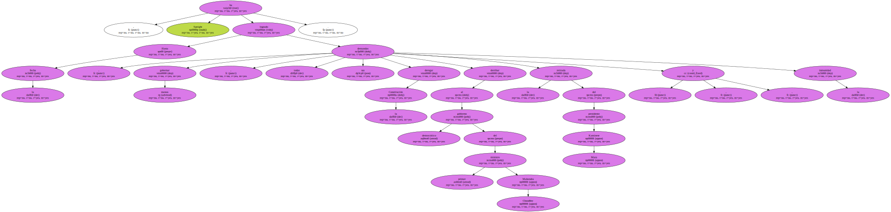Por su parte , la comunidad internacional ha condenado desde el principio la intentona golpista que encabeza Speight y países como Australia y Nueva Zelanda , entre otros , están a la espera de que los rehenes sean liberados para adoptar sanciones contra Fiyi por abandonar la senda de la democracia.
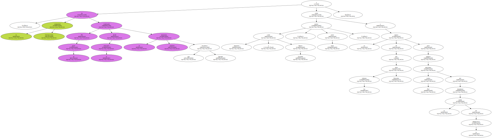El primer ministro israelí , Ehud Barak , llegó hoy jueves a Lisboa , donde se entrevistará con el presidente estadounidense , Bill Clinton , reunión que estaba prevista para esta noche en Berlín , segunda etapa del viaje del gobernante estadounidense.
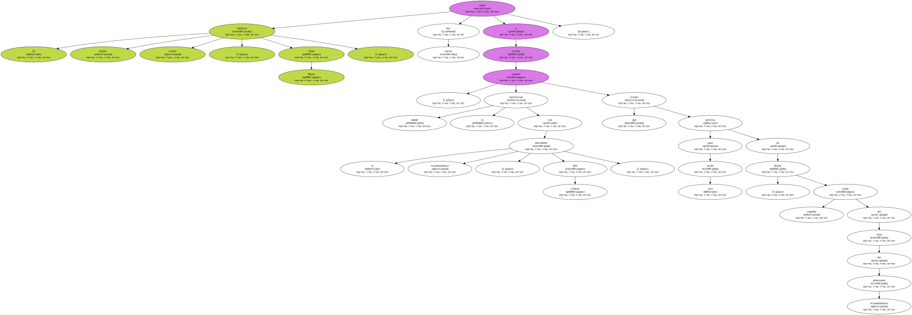El avión de Barak , procedente de Israel , aterrizó a las 8.15 hora local ( 07.15 gmt ) , en la base aérea de Figo Maduro , anexa al aeropuerto internacional de Lisboa.
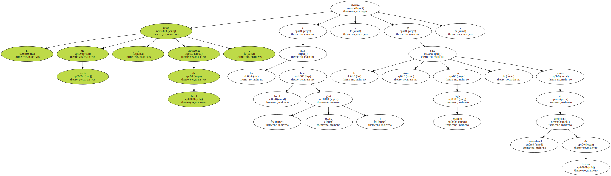El primer ministro israelí partió , en medio de fuertes medidas de seguridad , hacia el Palacio de Sao Bento para reunirse con su homólogo portugués , Antonio Guterres , que preside este semestre el Consejo Europeo.
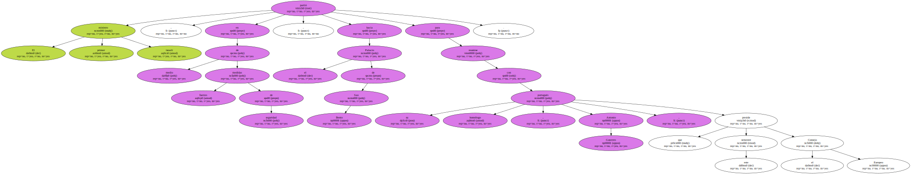Posteriormente , Barak se entrevistará con Clinton , para analizar los nuevos pasos en el proceso de paz en el Oriente Medio , tras la retirada del ejército israelí del sur de Líbano , así como el aumento de las reivindicaciones de la Autoridad Palestina.
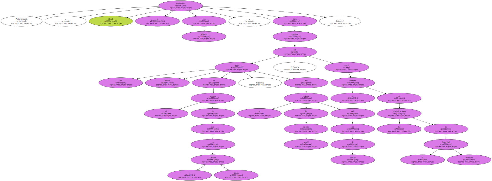Clinton , que se encuentra en Lisboa desde el martes pasado , conversó por teléfono ayer , durante 20 minutos , con el presidente de la Autoridad Nacional Palestina , Yasser Arafat.
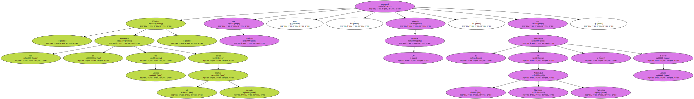El debate generado en Venezuela por el aplazamiento de las " megaelecciones " previstas para el pasado domingo ha revuelto el escenario político nacional , con un sólo invitado de piedra : el presidente Hugo Chávez.
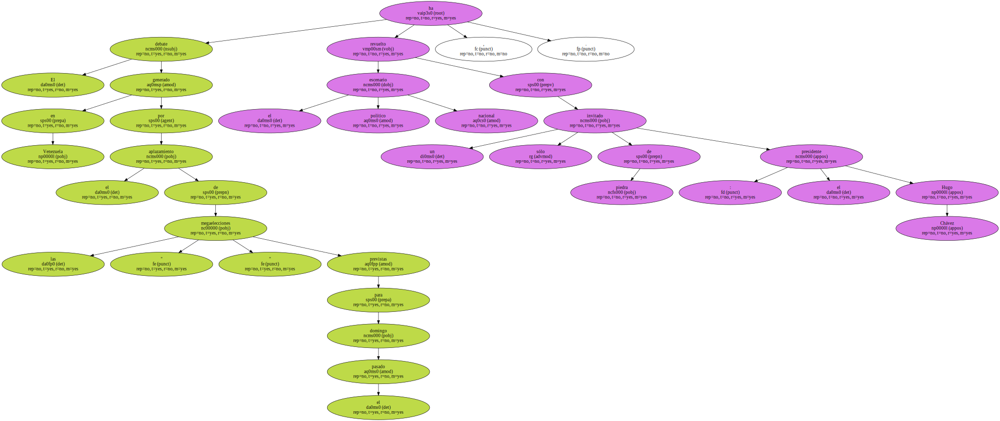